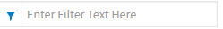
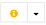
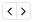
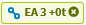
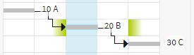
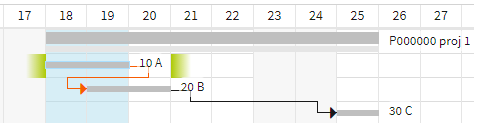

Terminplan¶
Die Hauptaufgabe der Operation Terminplan ist es, den Projektmitarbeiter nach dem Anlegen der Projektaufgaben bei der terminlichen Detailplanung zu unterstützen. Terminplan gewährleistet das durch eine übersichtliche Darstellung der Projektstruktur mit einem Gantt-Diagramm. Terminplan visualisiert die Aufgaben mitsamt ihrer Abhängigkeitsbeziehungen und gibt dem Projektmitarbeiter einen schnellen Überblick über den Projektablauf.
Die Termindaten, die im Terminplan grafisch dargestellt sind, sind identisch mit den gleichlautenden Daten im Aufgabendatenblatt. Der Zugriff auf die Terminplanung erfolgt
- über die Projektübersicht, in der Terminpläne in einer eigenen Kategorie aufgeführt werden
- über das Kontextmenü des jeweiligen Projekts, beispielsweise ausgewählt über die Trefferliste. Wenn das Projekt mehrere Terminpläne enthält, wird eine Liste der Terminpläne zur Auswahl angeboten.
- über den Navigationsbaum in der Kategorie Projekte > Terminpläne
Für jedes neu angelegte Projekt wird automatisch auch ein Terminplan angelegt.
Genauere Informationen zu den einzelnen Aufgaben erhält der Projektmitarbeiter durch den Tooltip, der beim Überstreichen des Aufgabenbalkens angezeigt wird. Hier werden Start, Ende und die Dauer in Arbeitstagen angegeben.
Schaltflächen zur Steuerung und Verwaltung des Terminplans
-  Filter
- Wenn Sie hier Sie einen Text eingeben, werden nur noch diejenigen Aufgaben im Terminplan angezeigt, die diesen Text enthalten. Durch Entfernen des Texts wird der Filter wieder aufgehoben.
- Ab markiertem Knoten vollständig expandieren
- Der Button klappt den Strukturbaum unterhalb des markierten Objekts vollständig aus.
- Zeige übergeordnete Objekte an
- Durch diesen Button wird das höchste übergeordnete Objekt in den Terminplan aufgenommen. Wird diese Funktion für eine Aufgabe aufgerufen, so wäre dies beispielsweise das Projekt, zu dem die Aufgabe gehört.
- Daten aktualisieren
- Lädt alle Daten neu in den Terminplan. Auf diese Weise kann der Terminplan aktualisiert, wenn Änderungen an den enthaltenen Daten in einem anderen Reiter oder durch einen anderen Benutzer erfolgt sind.
- Gehe zu
- Springt im Gantt-Chart zum Beginn der markierten Aufgabe.
- Gehe zu heute
- Springt im Gantt-Chart zum aktuellen Datum.
- Anzeigezeitraum an Plan anpassen
Passt den Gantt-Chart an den zur Verfügung stehenden Platz an, sodass möglichst der gesamte Planungszeitraum sichtbar wird. Dies ist jedoch nur möglich, falls dadurch nicht die Minimalbreite der Kalenderskala-Spalten unterschritten wird.
Drücken Sie zugleich die Strg-Taste und den Button, um die Kalenderskala automatisch so weit zu vergröbern, dass der Planungszeitraum auf jeden Fall in den sichtbaren Bereich eingepasst wird.
- Zoom
- Vergröbern oder verfeinern Sie mit den Lupen-Buttons die Gantt Chart-Skala in Schritten. Dabei werden die Skaleneinheiten (Tage, Wochen, Monate, Jahre) und der Maßstab des Charts verändert. Um zielgenau einen gewünschten Betrachtungszeitraum einzustellen, können Sie auch einfach auf die entsprechende Zeiteinheit in der Kalenderskala klicken, z.B. auf einen bestimmten Monat oder ein bestimmtes Quartal. Dadurch wird der sichtbare Bereich des Gantt Charts genau auf diesen Zeitbereich eingestellt.
Terminplan anlegen
Sollte sich in einem Projekt kein Terminplan befinden oder wenn Sie weitere Terminpläne benötigen, können Sie einen neuen Terminplan in der Projektübersicht anlegen. Klicken Sie dazu mit der rechten Maustaste auf die Kategorie Terminpläne und wählen Sie Neu... Geben Sie dem neuen Terminplan in dem dadurch eingeblendeten Dialog einen Namen und geben Sie ein Primäres Projekt an. Durch das Primäre Projekt bekommt der Terminplan den Rechtekontext dieses Projekts, sodass er z.B. für alle Teammitglieder sichtbar wird, sobald er im Status Gültig ist. Nach der Bestätigung des Dialogs erscheint der neue Terminplan in der entsprechenden Kategorie der Projektstruktur.
Aufgaben im Terminplan anlegen
Im Terminplan können Sie Aufgaben anlegen und modifizieren ohne in die Projekt- oder Aufgabeübersicht wechseln zu müssen.
-  Operationen des Terminplans
- Klicken Sie auf das “i” um das Datenblatt des Terminplans in einem neuen Reiter anzuzeigen. Klicken Sie auf das Pfeilsymbol, um das Drop Down-Menü anzuzeigen, in dem Sie die verschiedenen Operationen des Terminplans auswählen können.
- Objektbezogene Operationen
- Klicken Sie auf das Operationen-Icon, um das Drop Down-Menü anzuzeigen, in dem Sie verschiedene Operationen für das Projekt bzw. die Aufgabe auswählen können.
Sie können neue Aufgaben anlegen, indem Sie im Terminplan ein Projekt markieren und aus dem Operationen-Menü Aufgabe anlegen wählen. Es erscheint die Aufgaben-Maske, in der Sie die Eigenschaften der Aufgabe festlegen können. Nach Ihrer Bestätigung wird in dem Projekt die neue Aufgabe unten an der Aufgabenliste angefügt. Um diese weiter zu untergliedern, markieren Sie eine Aufgabe und wählen Sie Unteraufgabe anlegen. Sie können Aufgaben auf diese Weise beliebig tief zu Ihrer Projektstruktur verschachteln.
Aufgabenposition ändern
Um die Reihenfolge, in der die Aufgaben untereinander angeordnet sind, zu verändern, blenden Sie die Spalte Position ein (siehe Tabellenspalten). Editieren Sie dort die Positionsnummern, um die Aufgabenreihenfolge zu verändern.
Sammelaufgaben
Sammelaufgaben, also alle Aufgaben, die Unteraufgaben enthalten, werden im Gantt Chart mit zwei Balken dargestellt. Dasselbe gilt für Projekte im Gantt Chart. Der obere, dunklere Balken steht für den Soll-Termin, während der untere, hellere Balken den Bottom-Up-Termin darstellt.
Bottom-Up-Werte automatisch übernehmen
Wenn im Datenblatt einer Sammelaufgabe die Option Bottom-Up-Werte automatisch als Soll übernehmen eingeschaltet ist, werden beide Balken immer synchron gehalten.
- Die Sammelaufgabe ist in diesem Fall immer auch auf Automatisch berechnen gestellt.
- Die Termine der Sammelaufgabe können nicht manuell geändert werden. Es kann lediglich eine Einschränkung (z.B. “Starte nicht früher als...”) gesetzt werden.
- Verknüpfungen und Einschränkungen der Sammelaufgabe wirken sich auch auf alle Unteraufgaben aus.
- Wenn Sie Änderungen an den Unteraufgaben vornehmen, die sich auf die Termine der Sammelaufgabe auswirken, werden die Solltermine automatisch angepasst.
Bottom-Up-Werte nicht automatisch übernehmen
Wenn im Datenblatt einer Sammelaufgabe die Option Bottom-Up-Werte automatisch als Soll übernehmen nicht eingeschaltet ist, beeinflussen sich Änderungen der Solltermine der Unteraufgaben und der Sammelaufgabe gegenseitig weniger. In diesem Fall zeigt der obere Balken u.U. andere Soll-Termine an als sich aus der Bottom-Up-Berechnung der Unteraufgaben ergeben.
- Sie können die Termine der Sammelaufgabe manuell ändern, ohne dass sich dadurch die Unteraufgaben ändern und umgekehrt.
- Verknüpfungen der Sammelaufgabe wirken sich (bei automatischer Berechnung) nur auf die Sammelaufgabe, aber nicht auf die Unteraufgaben aus.
Der Konflikt muss dann manuell durch die Projektbeteiligten aufgehoben werden.
Ausnahme: Für automatisch berechnete Unteraufgaben mit Einschränkungsart “so früh wie möglich” gilt der Startzeitpunkt der Sammelaufgabe weiterhin als Randbedinung für die Terminberechnung, für Unteraufgaben mit “so spät wie möglich” der Endzeitpunkt der Sammelaufgabe.
Aufgaben im Terminplan modifizieren
Um Aufgaben im Terminplan zu modifizieren, stehen Ihnen mehrere Möglichkeiten zur Verfügung.
Inline Editing
Aufgaben können direkt in der Gantt-Chart-Tabelle editiert werden. Klicken Sie einfach bei einer zuvor markierten Aufgabe (oder Projekt) in eine Zelle, z.B. den Namen, um in den Editiermodus zu kommen und geben Sie dort die gewünschten Änderungen ein.
Ändern
Markieren Sie eine Aufgabe oder ein Projekt in der Gantt Chart-Tabelle und wählen Sie aus dem Operationen-Menü den Eintrag Ändern. Es erscheint die Maske Aufgabe (bzw. Projekt), in der Sie die gewünschten Änderungen vornehmen können. Noch schneller kommen Sie in die jeweilige Maske, indem Sie auf eine Aufgabe oder ein Projekt in der Gantt-Chart-Tabelle doppelklicken.
Ausführliche Informationen über die dort änderbaren Eigenschaften sind in den Abschnitten Projekte und Aufgabenstruktur und -management beschrieben.
DragDrop
Wenn Sie Termine von Aufgaben ändern wollen, können Sie diese auch direkt im Gantt-Chart durch Drag&Drop der Projekt- und Aufgabenbalken erreichen. Wenn Sie einen Balken in der Mitte anfassen, verwandelt sich der Mauszeiger in einen schwarzen Doppelpfeil. Ziehen Sie den Balken nach links oder rechts, um die Aufgabe zu verschieben. Während des Ziehens sehen Sie im Tooltip eine Vorschau auf die genauen Termindaten, die die Aufgabe erhält, wenn Sie wieder loslassen.
Um den Beginn oder das Ende einer Aufgabe zu Ändern, fassen Sie den Balken am jeweiligen Ende an. Der Mauszeiger verwandelt sich in einen weißen Doppelpfeil. Wenn Sie nun ziehen, wird nur der Termin am angefassten Ende verändert und die Dauer der Aufgabe passt sich entsprechend an.
Tabellenspalten
Sie können konfigurieren, welche Informationen im Tabellenteil des Gantt Charts angezeigt werden sollen.
- Spalten wählen
- Klicken Sie auf das Tabellensymbol ganz rechts im Tabellenkopf, um eine Liste der verfügbaren Spalten eingeblendet zu bekommen. Sie können in dieser Liste für jede Spalte ein Häkchen setzen oder entfernen, um festzulegen, ob die Spalte angezeigt werden soll. Durch Drag&Drop in dieser Liste können Sie die Reihenfolge der Spalten festlegen. Wenn Sie Ihre Wunschkonfiguration zusammengestellt haben, klicken Sie auf den Speicher-Button am unteren Ende der Liste. Die Spalten werden nun wie von Ihnen gewünscht angeordnet.
- Spalten minimieren
- Um schnell den verfügbaren Platz für das Gantt-Chart zu erweitern, wählen Sie das Reduzieren-Symbol oben rechts im Tabellenkopf. Dadurch werden alle Tabellenspalten, die rechts von der Namensspalte liegen, ausgeblendet, sodass das Gantt Chart einen breiteren Raum einnehmen kann. Mit einem weiteren Klick auf das Symbol wird die Tabelle wieder auf die Standard-Spaltenkonfiguration erweitert.
Sie können die Spaltenbreite verändern, indem Sie den rechten Rand der Spalte in der Kopfzeile mit der linken Maustaste festhalten, die gewünschte Breite durch Schieben der Maus einstellen und die linke Maustaste lösen.
Aufgabenbeziehungen
Zum Abbilden der Ablaufplanung können Aufgaben im Terminplan mit Hilfe von Aufgabenbeziehungen verknüpft werden. Dadurch wird es möglich, dass die Auswirkung einer Terminänderung auf die nachfolgenden Aufgaben automatisch berechnet werden kann. Nachfolgende direkt oder indirekt verbundene Aufgaben werden ggf. automatisch in ihren Terminen angepasst, sofern bei ihnen die Checkbox Automatisch berechnen gesetzt wurde und etwaige Einschränkungstermine eine entsprechende Verschiebung erlauben. Alle Konflikte der Aufgabenbeziehungen, welche durch den Berechnungsalgorithmus nicht automatisch aufgelöst werden können, werden angezeigt, indem die Verknüpfungspfeile rot hervorgehoben werden.
Darüber hinaus können Aufgabenbeziehungen verwendet werden, um Bearbeitungsfolgen zu steuern, etwa indem Aufgaben erst dann zur Umsetzung freigegeben werden und beginnen können, wenn der Vorgänger abgeschlossen ist. Zum Beispiel muss erst die Aufgabe “Anlieferung von Bauteilen” abgeschlossen sein, damit dann die Aufgabe “Zusammenbau der gelieferten Bauteile” beginnen kann.
Zur Verfügung stehen die gängigen Verknüpfungsarten, wie sie für Projektaufgaben verwendet werden:
- Ende-Anfang, EA: Der Nachfolger darf erst beginnen, wenn der Vorgänger abgeschlossen ist (Normalfolge)
- Anfang-Anfang, AA: Der Nachfolger darf erst beginnen, wenn der Vorgänger begonnen hat (Anfangsfolge)
- Ende-Ende, EE: Der Nachfolger darf erst enden, wenn der Vorgänger beendet ist (Endfolge)
- Anfang-Ende, AE: Der Nachfolger darf erst enden, wenn der Vorgänger begonnen ist (Sprungfolge)
Sie können eine Aufgabenbeziehung zwischen zwei Aufgaben definieren, indem Sie die entsprechenden Kürzel und Zeilennummern (nicht Position!) in die Spalte Vorgänger bzw. Nachfolger eintragen. Wenn die Spalten nicht angezeigt werden, können Sie sie über die Spaltenkonfiguration ein-/ausblenden.
-  Beziehungsstatus
- Sehr viel schneller und komfortabler können Sie die Vorgänger- bzw. Nachfolgerspalte ein- und ausblenden, indem Sie in der Spalte Beziehungsstatus auf den Pfeil nach links (Vorgänger) oder den Pfeil nach rechts (Nachfolger) klicken. Die jeweilige Spalte wird dann unmittelbar ein- bzw. ausgeblendet.
Geben Sie zum Erstellen einer Aufgabenbeziehung das Kürzel für die Verknüpfungsart sowie die Zeilennummer der zu verknüpfenden Aufgabe ein. Wenn Sie z.B. eine Ende-Anfang-Beziehung zwischen den Aufgaben in den Zeilen 2 und 3 erstellen wollen, blenden Sie die Spalte Nachfolger ein. Geben Sie dort in Zeile 2 das Kürzel EA3 ein und Sie haben die Aufgabenbeziehung erstellt (Ebenso könnten Sie das Kürzel EA2 in die Spalte Vorgänger der Aufgabe in Zeile 3 eintragen)
Sie können auch feste Zeitabstände für Verknüpfungen festlegen. Wenn zwischen den beiden Aufgaben 5 Tage Abstand eingehalten werden müssen, geben Sie ein: EA3+5t. Für gewünschte Überlappungen geben Sie negative Abstände ein: EA3-5t
Wenn eine Aufgabe Verknüpfungen zu mehreren anderen Aufgaben haben soll, können die Verknüpfungskürzel durch Komma getrennt aneinander gehängt werden. In der Nachfolger-Zelle würde dann etwa stehen “EA3, EA5”, wenn die Aufgabe die Zeilen 3 und 5 als Nachfolger hat.
-  Aufgabenbeziehung
Ihre Eingabe für eine neue Aufgabenbeziehung wird in der Vorgänger- bzw. Nachfolger-Spalte in ein Symbol umgewandelt, welches Ihnen zusätzliche Informationen und Bedienungsmöglichkeiten an die Hand gibt:
- Es enthält die Kurzbezeichnung für die Verknüpfung. Wenn in der Kurzbezeichnung die Zeilennummer fehlt, ist die verknüpfte Aufgabe nicht in Ihrem Terminplan enthalten bzw. befindet sich in eine zugeklappten Strukturast.
- Klicken Sie in diesem Fall auf das Verknüpfungssymbol, um die nicht sichtbare Aufgabe einzublenden bzw. in den Terminplan zu laden. Die Aufgabe wird dadurch an den Terminplan angeheftet, d.h. es wird in der Spalte Anheften das Pin-Symbol gesetzt. Nähere Informationen dazu finden Sie im Abschnitt Individuelle Terminpläne für Multiprojektplanung oder Detailbetrachtungen.
- Die Farbe zeigt Ihnen an, ob für diese Aufgabenbeziehung ein Terminkonflikt vorliegt. Wenn dies der Fall ist, ist das Symbol rot, andernfalls grün. Bei einem Terminkonflikt wird außerdem ein Ausrufezeichen über das Verkettungssymbol geblendet.
- Löschen Sie eine Aufgabenbeziehung, indem Sie auf das Kreuz in einem Verknüpfungssymbol klicken.
Die Aufgabenbeziehung wird im Gantt Chart durch einen Pfeil zwischen den verknüpften Enden der beiden Aufgaben dargestellt. Wenn die Aufgabenbeziehung verletzt ist, also ein Konflikt in Ihrer Terminplanung entstanden ist, wird der Verknüpfungspfeil rot dargestellt.

 Termingrenzen
TermingrenzenWenn Sie eine Aufgabe markieren oder mit dem Mauszeiger darüber fahren, werden Ihnen im Diagramm die Termingrenzen angezeigt, die vom Beginn bzw. Ende der Aufgabe eingehalten werden müssen, damit die Aufgabenbeziehungen erfüllt sind.
Als Termingrenzen werden der frühest mögliche Anfangstermin (Symbol nach links verblassend) und der spätestmögliche Endtermin (Symbol nach rechts verblassend) angezeigt.

Die Termingrenzen werden unter Berücksichtigung des ganzen Netzwerks berechnet, d.h.
für den Anfangstermin: Die Aufgabe könnte frühesten an der Termingrenze enden, wenn alle Vorgängeraufgaben konfliktfrei terminiert wären.
für den Endtermin: Die Aufgabe könnte spätestens an der Termingrenze enden, wenn alle Folgeaufgaben konfliktfrei terminiert wären.
Beispiel: Wen man Aufgabe A und B soweit wie möglich nach hinten schieben würde, ohne das Projektende zu verschieben, dürfte Aufgabe A spätestens am Tag 20 enden (und Aufgabe B spätestens am Tag 22).

- Die Farben des Symbols bedeuten:
- Grün: Der tatsächliche Anfang liegt nach der Anfangstermingrenze bzw. das tatsächliche Ende liegt vor der Endtermingrenze.
- Rot: Es liegt ein Terminkonflikt vor, d.h. der tatsächliche Anfang liegt vor der Anfangstermingrenze bzw. das tatsächliche Ende liegt nach der Endtermingrenze.
Zu beachten: Wenn keine Einschränkungstermine verwendet wurden, werden die Termingrenzen so angezeigt, dass Projektanfang und -ende eingehalten werden. Wenn Sie jedoch Einschränkungstermine wie Ende nicht später als oder Muss enden am verwendet haben, werden die Termingrenzen so angezeigt, dass diese Einschränkungstermine nicht verletzt werden.
- Beziehungsstatus
Einen sehr schnellen Überblick über das Vorhandensein von Terminkonflikten gibt Ihnen die Spalte Beziehungsstatus. Dort können Sie für jede Aufgabe sofort erkennen, ob Terminkonflikte zu anderen Aufgaben vorliegen, auch wenn verknüpften Aufgaben gerade nicht sichtbar sind.
- Eine rote Darstellung des Vorgänger-/Nachfolgersymbols bedeutet, dass mindestens ein Konflikt zu einem Vorgänger/Nachfolger besteht.
- Eine grüne Darstellung des Vorgänger-/Nachfolgersymbols bedeutet, dass alle Verknüpfungen zu Vorgängern/Nachfolgern konfliktfrei sind.
- Eine weiße Darstellung des Vorgänger-/Nachfolgersymbols bedeutet, dass keine Verknüpfungen zu Vorgängern/Nachfolgern vorhanden sind.
Klicken Sie auf das Symbol, um die entsprechende Spalte eingeblendet zu bekommen.
Verschiebeoptionen für Aufgaben
Wenn Sie Aufgabentermine ändern, kann dies infolge der Aufgabenbeziehungen Auswirkungen auf nachfolgende Aufgaben haben. Sie können sich entscheiden, ob der Terminplan lediglich Terminkonflikte aufzeigen soll, oder ob automatische Anpassungen vorgenommen werden sollen, indem sie die Checkbox Automatisch berechnen für eine Aufgaben aktivieren oder deaktivieren.
- Automatische Aufgaben: Wird eine Aufgabe auf automatisch gesetzt, so übernimmt der Planungsalgorithmus die terminliche Platzierung der Aufgabe anhand von deren verknüpften Vorgängern und etwaigen Einschränkungsterminen. Eine terminliche Verschiebung wird allerdings nur dann vorgenommen, wenn die Aufgabe nicht bereits in Teilen begonnen wurde.
- Manuelle Aufgaben: Wird eine Aufgabe auf manuell gesetzt, so wird sie damit stets auf dem gesetzten Termin verbleiben und nicht durch den Planungsalgorithmus verschoben. Alle Vorgänger und Nachfolger der Aufgabe berechnen ihre frühsten Start- bzw. spätesten Endtermine anhand dieser manuellen Termine und nicht anhand von deren frühstmöglicher oder spätestmöglicher Lage.
Bemerkung
Hinweis Sollten im Rahmen der automatischen Terminberechnung Konflikte auftreten, so werden den Einschränkungsarten stets der Vorrang gegenüber den Verknüpfungen zu anderen Aufgaben eingeräumt. Diese ggf. entstehenden Konflikte zwischen den Aufgaben werden dem Nutzer durch rote Hervorhebung signalisiert.
Individuelle Terminpläne für Multiprojektplanung oder Detailbetrachtungen
Der Terminplan, der für jedes neue Projekt automatisch angelegt wird, ist nicht der einzig mögliche Terminplan. Wenn Sie einen Terminplan für eine Multiprojektsicht benötigen oder aber einen extra Terminplan für Teilaspekte ihres Projekts erstellen wollen, haben Sie die Möglichkeit, beliebig viele Terminpläne mit unterschiedlichen Inhalten zusammenzustellen. Dabei können Projekte und Aufgaben problemlos in mehreren Terminplänen enthalten sein, da es jedes Terminplanelement nur einmal gibt und beim Hinzufügen zu einem Terminplan nur mit diesem verknüpft wird.
Angeheftete Terminplanelemente
Um ein Terminplanelement – ein Projekt oder eine Aufgabe – einem Terminplan zuzuordnen, muss es an den Terminplan angeheftet werden. Angeheftete Objekte erkennen Sie im Terminplan an dem Pin-Symbol in der Spalte Anheften. Angeheftete Terminplanelemente können im Terminplan jederzeit aufgeklappt werden, so dass alle untergeordneten Aufgaben im Terminplan sichtbar werden.
Neue Terminplanelemente anheften
Einem Terminplan neue Terminplanelemente hinzufügen (anheften) können Sie in der Projektübersicht. Klappen Sie die Kategorie Terminpläne auf. Dort sind alle Terminpläne, die dem Projekt zugeordnet sind, aufgeführt. Um Aufgaben aus demselben Projekt anzuheften, ziehen Sie diese in der Projektübersicht auf den gewünschten Terminplan. Um andere Projekte oder Aufgaben aus anderen Projekten an den Terminplan zu heften, ordnen Sie eine Trefferliste oder Projekt-/Aufgabenübersicht daneben an und ziehen die gewünschten Terminplanelemente fensterübergreifend auf den Terminplan in der Projektübersicht.
Desweiteres haben Sie die Möglichkeit im Kontextmenü des Terminplans die Operationen Projekt hinzufügen und Aufgabe hinzufügen aufzurufen, um Objekte dieses Typs auszuwählen und damit in den Terminplan aufzunehmen. Diese Operationen stehen ihnen ebenso innerhalb des geöffneten Terminplans zur Verfügung.
Angeheftete Terminplanelemente auf mehreren Gliederungsebenen
Eine Aufgabe, die einer angehefteten Aufgabe untergeordnet ist, können Sie auch anheften, indem Sie auf das Pin-Symbol in der Spalte Anheften klicken. Durch das Pin-Symbol ist die Aufgabe nun als angeheftet gekennzeichnet. Wenn Sie nun das übergeordnete Terminplanelement zuklappen, wird das untergeordnete nicht ausgeblendet, sondern selbst auf der obersten Hierarchie-Ebene angezeigt. Auf diese Weise erreichen Sie also, dass bestimmte Aufgaben, die Sie im Blick behalten wollen, nie ausgeblendet werden.
Entsprechend wird eine Aufgabe, die Sie über das Verknüpfungssymbol in den Spalten Vorgänger bzw. Nachfolger einblenden (siehe Anordnungsbeziehungen), unten an den Terminplan angeheftet. Wenn die Aufgabe ausgeblendet war, weil sie sich in einer zugeklappten Sammelaufgabe befand, wird sie auf der obersten Gliederungsebene ausgeblendet, sobald sie durch Aufklappen der Sammelaufgabe innerhalb der Hierarchie sichtbar wird. Wenn Sie wieder zuklappen, wird die angeheftete Aufgabe wieder unten angehängt, solange sie angeheftet ist.
Terminplanelemente vom Terminplan lösen
Um angeheftete Terminplanelemente wieder aus dem Terminplan zu lösen, klicken Sie auf das Pin-Symbol in der Spalte Anheften. Wenn kein Elternobjekt ebenfalls angeheftet ist, verschwindet die Aufgabe sofort aus dem Terminplan.
Teiläste anheften
Wenn ein Terminplanelement auf einer hohen Hierarchie-Ebene angeheftet ist, Sie aber nur einen untergeordneten Teilast im Terminplan haben wollen, heften Sie zuerst die untergeordnete Teilaufgabe an, und lösen Sie danach das das übergeordnete Terminplanelement vom Terminplan. Dadurch wird letzteres aus Terminplan ausgeblendet, aber die untergeordnete Aufgabe bleibt angeheftet.